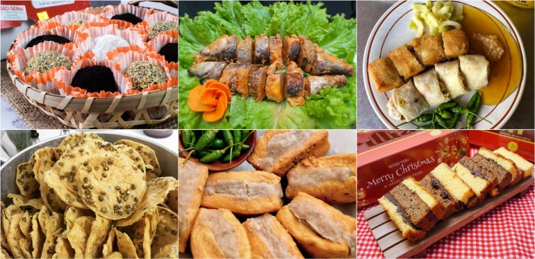
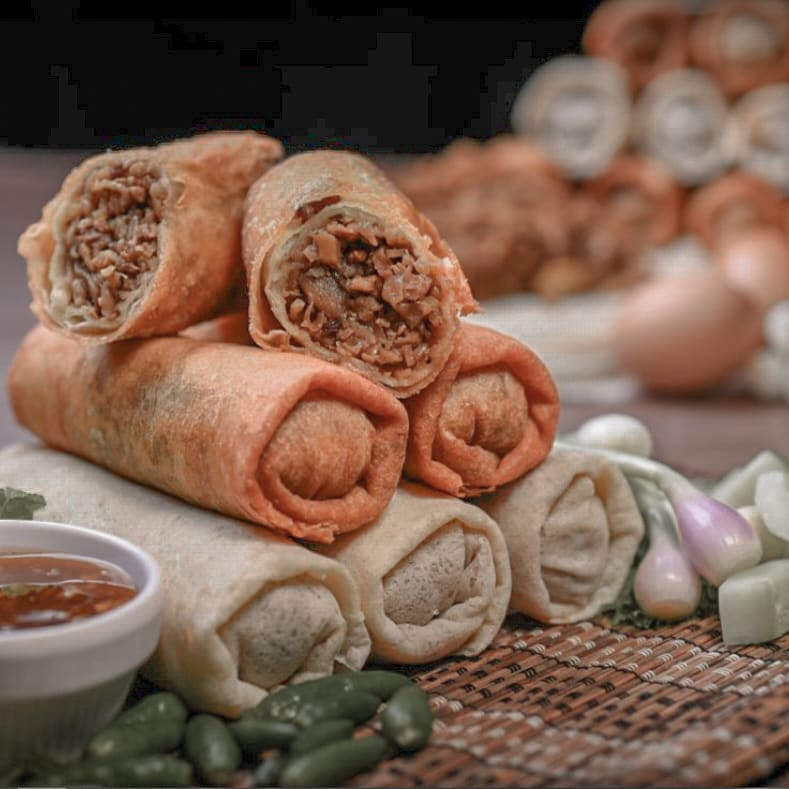
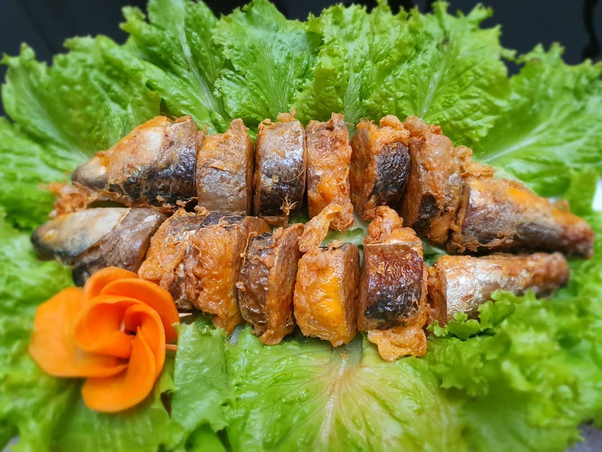
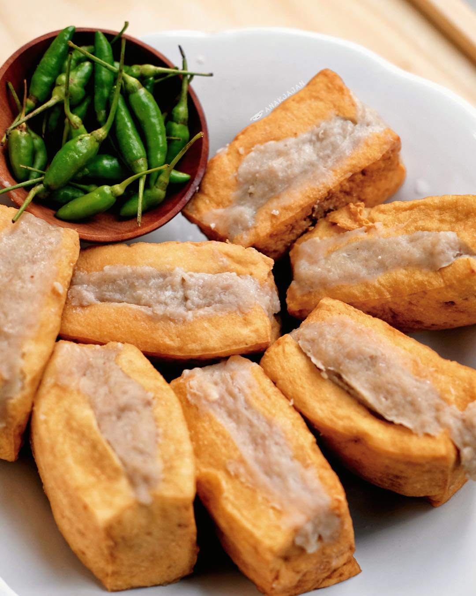
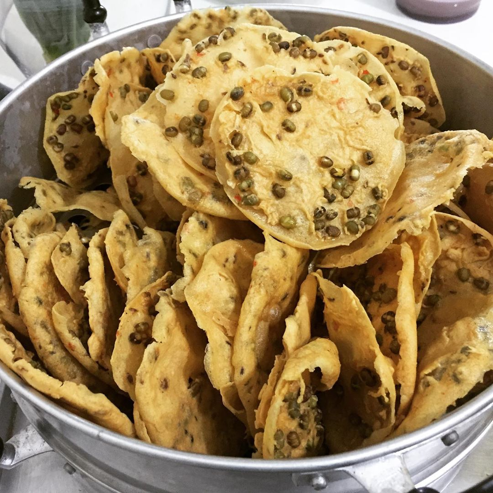
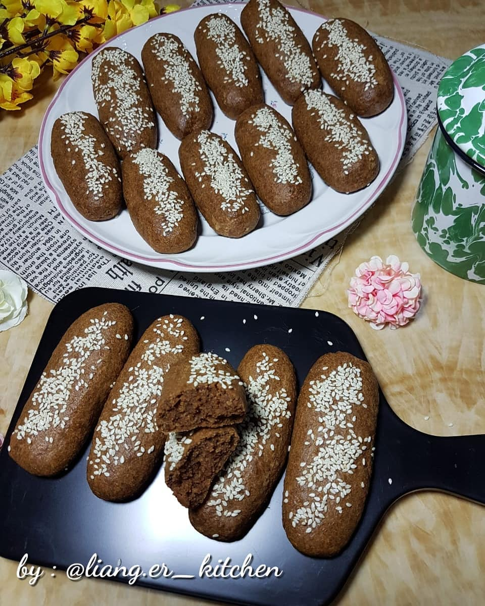
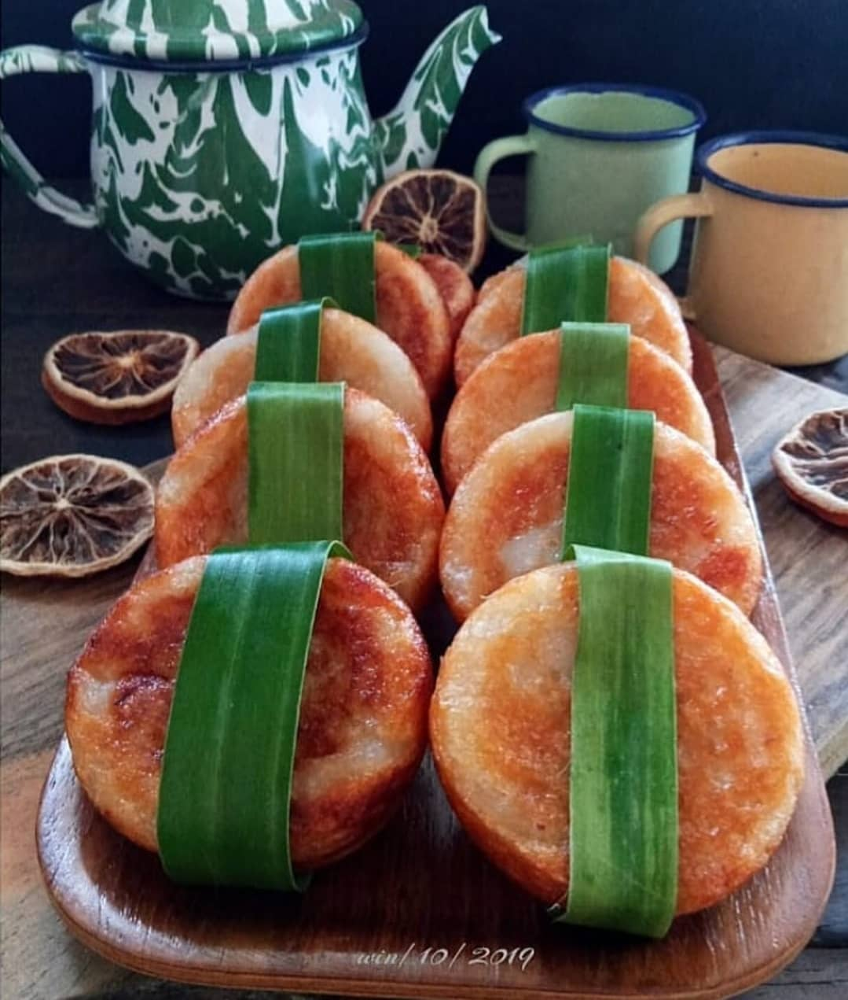
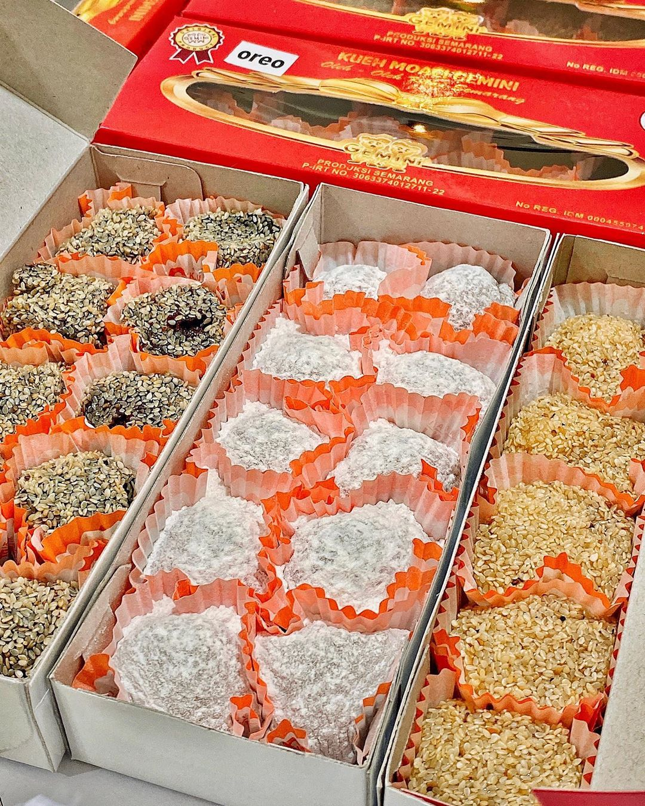
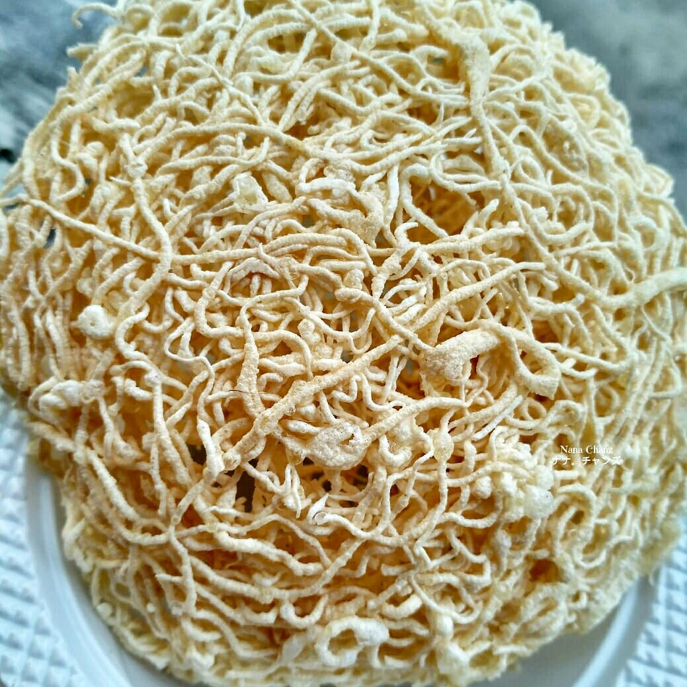
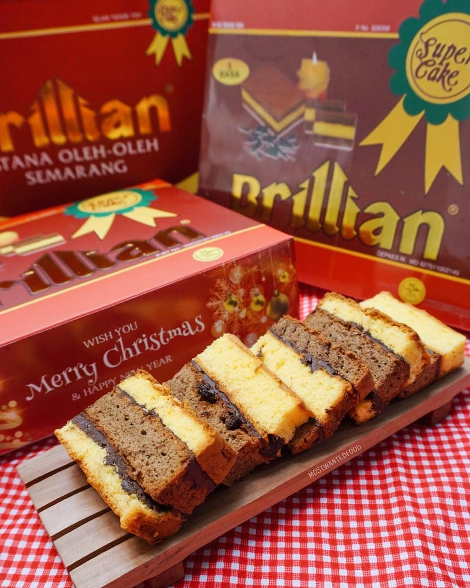

SELAMAT DATANG DI WEBSITE E-TOURISM of SEMARANG Disini anda akan lebih mudah mengetahui info tentang Semarang SELAMAT DATANG DI WEBSITE E-TOURISM of SEMARANG Disini anda akan lebih mudah mengetahui info tentang Semarang SELAMAT DATANG DI WEBSITE E-TOURISM of SEMARANG Disini anda akan lebih mudah mengetahui info tentang Semarang SELAMAT DATANG DI WEBSITE E-TOURISM of SEMARANG Disini anda akan lebih mudah mengetahui info tentang Semarang
Home
Destinasi
Oleh-Oleh
Contact Us
About Us

ANEKA OLEH-OLEH KHAS SEMARANG
Jika ke Semarang jangan lupa beli oleh-oleh!

Lunpia
Jajanan Khas Semarang

Bandeng Presto
Makanan Khas Semarang

Tahu Bakso
Jajanan Khas Semarang

Tumpi Rempeyek
Jajanan Khas Semarang

Roti Ganjel Rel
Jajanan Khas Semarang

Winko Babad
Jajanan Khas Semarang

Moachi Gemini
Jajanan Khas Semarang

Kue Sarang Madu
Jajanan Khas Semarang

Roti Brilian
Jajanan Khas Semarang